A in B.A.B.E.L. · Action-Roguelite
Amps & Arcs
In ArbeitSpielt in: Anschlüsse bis Grafikkarte
Ein actionreiches Roguelite. Über die Anschlüsse rieselt Rauschen in den PC: Störsignale, Datenmüll, Funken. Ein Roboter läuft von selbst durch die Leitungen, entstört Welle um Welle und baut sich dabei Bauteil für Bauteil zu einer kleinen Störschutz-Maschine aus, bis vier Torwächter besiegt sind.
So spielt es sich
- Der Roboter läuft von selbst, der Daumen steuert nur seitlich. Gefeuert wird von selbst.
- Gesammelter Schrott füllt eine Leiste, dann wird eingebaut: Bauteile, Waffenstufen, Schaltungen und Überladungen.
- 22 Roboter in vier Familien, jeder mit eigener Waffe. Stufen 0 bis 5 wie in Bits & Bolts.
Wo es spielt
- Anschlüsse
- Netzwerkkarte
- Soundkarte
- Grafikkarte
Bilder
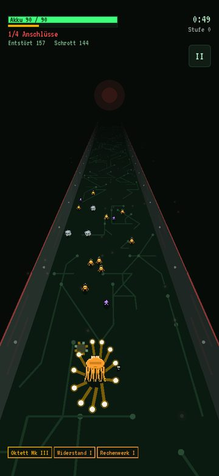
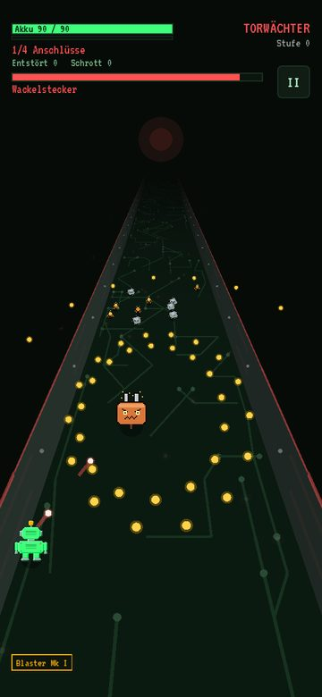
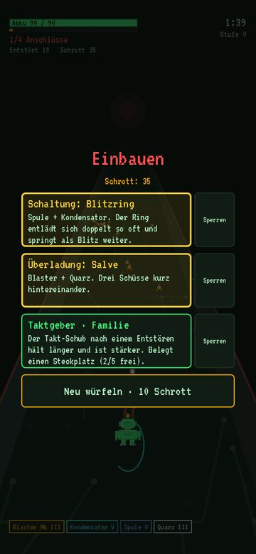
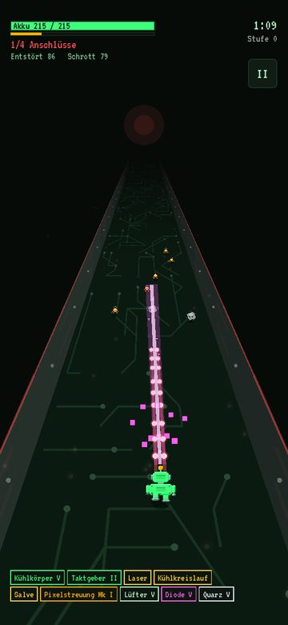
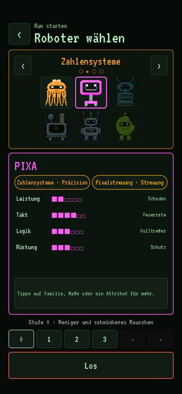
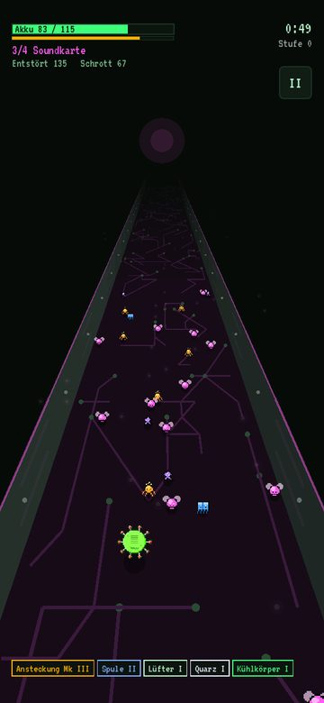
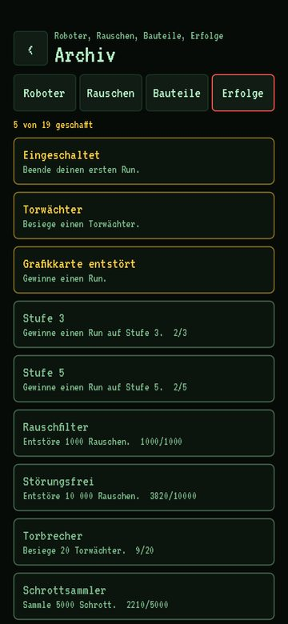
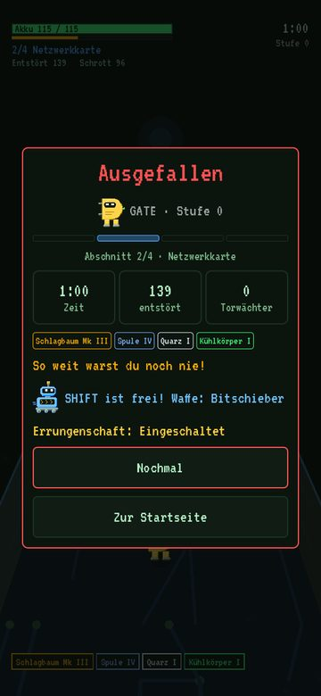
Ein Run im Detail
- Hinter dem Roboter: Er läuft von selbst durch einen Gang aus Leiterbahnen, der Daumen steuert nur nach links und rechts. Gefeuert wird von selbst.
- Ein Run führt durch vier Abschnitte, je etwa zwei Minuten. Am Ende jedes Abschnitts wartet ein Torwächter, danach lädt der Akku etwas auf.
- Schrott aus entstörtem Rauschen füllt eine Leiste. Ist sie voll, wird eins aus drei Angeboten eingebaut.
- Ausgefallen ist der Roboter, wenn sein Akku leer ist. Die Rüstung macht jeden Treffer schwächer.
Die vier Abschnitte
Jeder Abschnitt hat eigenes Rauschen, spätere mischen das ältere mit.
Anschlüsse
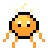
Funkenfloh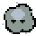
Staubflocke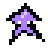
Knackser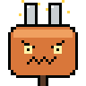
Wackelstecker Torwächter
Netzwerkkarte
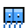
Paketlaus- Ping
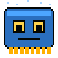
Paketsturm Torwächter
Soundkarte
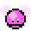
Brummer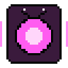
Rückkopplung Torwächter
Grafikkarte
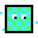
Pixelfehler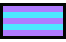
Streifen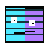
Artefakt Torwächter
Einbauen
- Bauteile wachsen von Stufe I bis V, höchstens fünf verschiedene pro Run: Kondensator, Spule, Lüfter, Widerstand, Diode, Quarz, Sicherung, Kühlkörper.
- Familienbauteile nur für die eigene Familie: Taktgeber, Rechenwerk, Schutzschaltung, Säure.
- Schaltungen: Zwei Bauteile auf höchster Stufe verschmelzen. Blitzring, Laser, Kühlkreislauf, Schmelzsicherung.
- Überladungen: Jede Waffe hat eine Endform, wenn sie auf Mk III ist und ihr Partner-Bauteil auf Stufe III, zum Beispiel die Salve des Blasters oder die Seuche von VIRUS.
- Schrott ausgeben: neu würfeln oder eine Karte für später sperren. Einmal pro Run kommt die Waffe eines anderen Roboters als Zweitwaffe dazu.
Sechs Stufen
Wie in Bits & Bolts: Ein Sieg auf einer Stufe öffnet die nächste, mit jedem Roboter.
| Stufe | Was dazukommt |
|---|---|
| 0 | Weniger und schwächeres Rauschen |
| 1 | Normal |
| 2 | Rauschen ist zäher |
| 3 | Goldenes Elite-Rauschen: dreimal so zäh, dreimal so viel Schrott |
| 4 | Dichter, und die Torwächter halten mehr aus |
| 5 | Alles schneller, Berührungen schmerzen mehr |
Die 22 Roboter in vier Familien
Die Familien kommen aus Bots & Buddies, jede bringt eine Eigenschaft mit. Jeder Roboter hat seine eigene Waffe, die Art (Nahkampf, Fernkampf oder Streuung) zeigt, wie sie trifft. BYTE ist von Anfang an da, alle anderen schaltet frei, was man spielt.
Prozesse · Takt
Nach jedem entstörten Rauschen feuern die Waffen eine Sekunde lang schneller.
 BYTE Blaster · Fernkampf
BYTE Blaster · FernkampfEinzelschüsse auf das nächste Rauschen.
 LOOP Schleife · Nahkampf
LOOP Schleife · NahkampfKugeln kreisen um ihn und schwingen hinaus.
 MORSE Funkspruch · Fernkampf
MORSE Funkspruch · FernkampfPunkt, Punkt, Strich, der Strich schlägt durch alles.
 SHIFT Bitschieber · Streuung
SHIFT Bitschieber · StreuungSchnelle Schüsse, Bit für Bit über die ganze Breite geschoben.
 DAEMON Hintergrunddienst · Fernkampf
DAEMON Hintergrunddienst · FernkampfDrohnen schweben vor ihm und schießen selbst.
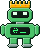
ROOT Wurzelbeben · NahkampfEine breite Welle läuft vor ihm durch die Leitung.
Zahlensysteme · Präzision
Mehr Volltreffer, und jeder Volltreffer sprüht Funken auf ein Rauschen daneben.
 OKTA Oktett · Streuung
OKTA Oktett · StreuungAcht Schüsse im Ring um ihn herum.
 PIXA Pixelstreuung · Streuung
PIXA Pixelstreuung · StreuungEin Fächer aus Pixeln mit kurzer Reichweite.
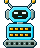
HEXA Hexschuss · FernkampfEin sehr starker Schuss auf das zäheste Rauschen.
 ASKI Zeilenumbruch · Fernkampf
ASKI Zeilenumbruch · FernkampfEin Zeichen fliegt hinaus und trifft auf dem Rückweg noch einmal.
 CHROMA Prisma · Streuung
CHROMA Prisma · StreuungFarbige Strahlen im Fächer.
 NIBBLE Knabbern · Nahkampf
NIBBLE Knabbern · NahkampfBeißt schnell in das nächste Rauschen.
Logikgatter · Panzerung
Jeder Treffer gegen dich wird kleiner, Funken der Torwächter noch mehr.
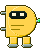
GATE Schlagbaum · NahkampfSchwingt vorn einen Balken durch alles.
 XOR Kreuzfeuer · Fernkampf
XOR Kreuzfeuer · FernkampfSchüsse schräg nach vorn, die sich kreuzen.
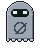
NULL Nullfeld · NahkampfEin Feld um ihn trifft alles, was hineinkommt.
 PARI Paritätsbogen · Fernkampf
PARI Paritätsbogen · FernkampfEin Blitz springt durch mehrere Rauschen.
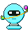
QUBIT Überlagerung · StreuungSchüsse tauchen direkt vor dem Rauschen auf.
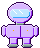
MIRA Spiegelschuss · FernkampfSchüsse prallen von den Wänden ab.
Störenfriede · Rost
Jeder Treffer rostet nach, ein Viertel des Schadens kommt noch dazu.
 VIRUS Ansteckung · Fernkampf
VIRUS Ansteckung · FernkampfSporen rosten stark nach, der Rost springt beim Entstören weiter.
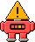
ERROR Absturz · NahkampfRegelmäßig eine Explosion um ihn herum.
 GLITCH Bildfehler · Streuung
GLITCH Bildfehler · StreuungSehr schnelle Schüsse in zufällige Richtungen.
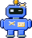
PATCH Flicken · FernkampfLangsame Flicken, die im Ring explodieren.
Dazu
- 19 Errungenschaften und eine Statistik über alle Runs, ohne Konto.
- Üben einzelner Abschnitte, ein Archiv mit Robotern, Rauschen und allem, was man gebaut hat, und ein Verlauf.
- Eine kurze Einführung im ersten Run, Töne im 8-Bit-Stil, Vibration, alles abschaltbar.